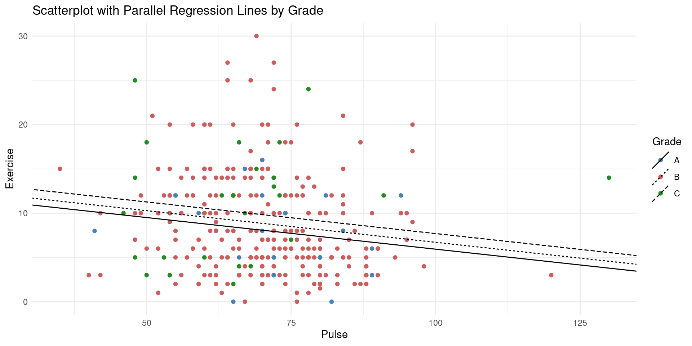

| Mean Exercise | Mean SAT | Mean Pulse | Mean Piercings | n |
|---|---|---|---|---|
| 8.892647 | 1205.1 | 70 | 1.7 | 340 |
Lecture 11 - Multiple Linear Regression
MATH 1052
Richard Boire & Dave Riegert
Trent University
Slide Contents
- factor variables
- what to watch out for!
- linear regression with a categorical predictor
- simple example - two categories;
- more involved example - MOAR categories;
Many Predictors
The Data
A first day survey over several different introductory statistics classes.
SAT: Combined SAT scores (out of 1600)Exercise: Hours of exercise (per week)GPA: Grade Point Average (letter grade)Pulse: Pulse rate (beats per minute)Piercings: Number of body piercingsCodedSex: 0=female or 1=male
We want to understand whether any of these factors are associated with the amount of exercise per week.
This means that Exercise is going to be our response variable.
0. Look at the CSV File
First we뗛 look at the .csv file to see if there is anything that jumps out or anything we should be watching out for when working with this data.
Next, we read in the data and examine the columns:
Glimpse
0. Prepare the Data
1. Explore the Data
- We can use the
count()andsummarize()functions to help with the numerical summaries. ggpairs, scatterplots, barplots, histograms, etc. to visualize the data.
1. EDA count()
count()is a function that counts the number of times a unique value is observed in a column.- Almost always used to examine categorical variables.
1. EDA count() - Sex and Grade
1. EDA summarize()
- Summarize lets us calculate numerical statistics for columns.
- Typically we would use
summarize()with numeric variables, however it also let뗩 us 띾ount the number of observations using then()function. - We can combine
summarize()withgroup_by()in order to calculate the numerical statistics for each column, separated by level of thegroup_by()variable(s).
A straight forward use of summarize() would be:
1. Eda summarize(), group_by()
A more interesting table:
| Grade | Mean Exercise | Mean SAT | Mean Pulse | Mean Piercings | n |
|---|---|---|---|---|---|
| A | 7.9 | 1300.0 | 73.0 | 1.8 | 29 |
| B | 8.9 | 1205.5 | 70.0 | 1.7 | 275 |
| C | 10.0 | 1125.8 | 67.3 | 1.6 | 36 |
1. EDA ggpairs()
Reflection
Do we think that there are any relationships here between Exercise and the other variables?
- Exercise and SAT:
- Exercise and Pulse:
- Exercise and Piercings:
- Exercise and Grade:
- Exercise and Sex:
Fitting the Model: Detour
Back in Time: SLR
- Simple linear regression (SLR) is used to quantify the relationship between two numeric variables.
- We are fitting a model that has the form: \[ \hat{y} = \beta_{0} + \beta_{1}x \qquad(1)\]
- The parameters that we are estimating are the \(\beta\)뗩 (aka, the model coefficients).
- Once we estimate the coefficients, we have a model of the form \[ \hat{y} = b_{0} + b_{1}x \qquad(2)\]
- Equation 2 is the: fitted model equation, fitted model, model equation, line of best fit, regression model, etc.
SLR: Exercise and Pulse
- Let뗩 fit a model between
ExerciseandPulse.
| term | estimate | std.error | statistic | p.value |
|---|---|---|---|---|
| (Intercept) | 14.1173 | 1.7546 | 8.0460 | 0.0000 |
| Pulse | -0.0747 | 0.0247 | -3.0217 | 0.0027 |
and our model equation is:
\[ \hat{E} = 14.1 - 0.075P \]
- \(\hat{E}\) is the expected amount of exercise (hours per week); and
- \(P\) is the pulse rate (beats per minute).
Check Model Diagnostics
Comments:
- Resid vs. Fit: Some nonlinearity, but small number of observations
- QQ-Plot: A bit right-skewed
- Scale-Location: Some non-constant variance
Overall, these seem okay.
Full Hypothesis Test
- Is there a linear relationship between
ExerciseandPulse? - Let \(\beta_{1}\) be the average change between
PulseandExercisefor all students in introductory statistics courses. \[ H_{0}: \beta_{1} = 0 \quad \text{vs} \quad H_{A}: \beta_{1} \neq 0 \] - Assumptions checked above.
| term | estimate | std.error | statistic | p.value |
|---|---|---|---|---|
| (Intercept) | 14.117 | 1.755 | 8.046 | 0.000 |
| Pulse | -0.075 | 0.025 | -3.022 | 0.003 |
- \(t_{stat} = -3.02\) and associated \(p\text{-value} = 0.003\)
- \(p\text{-value} < 0.05\) so we reject the null hypothesis.
- Therefore, we can conclude that there is a linear relationship between
ExerciseandPulse.
Plot of the Model
Predicting Exercise Based on Pulse
- What is the predicted number of hours of exercse per week for students with pulses of: 40, 50, 60, 70 bpm?
- We can also find a confidence interval for these predictions
- This is called a Prediction Interval
- How good do we think these predictions are?
Confidence Interval
- And we can construct a Confidence Interval for the model.
fit lwr upr
1 11.50 9.71 13.30
2 11.13 9.56 12.70
3 10.38 9.25 11.52
4 9.64 8.88 10.40Confidence Interval Visualization
Prediction vs. Confidence Interval
- A prediction interval gives a range of plausible values for observations of the response at a given value of the predictor.
- A confidence interval gives a range of values within which we expect the mean response value for a given value of the predictor.
Example:
- We saw that at 50bpm our prediction interval was: -0.491 to 21.257 .
- We are 90% confident that the next observed value of hours of Exercise will be in the interval -0.5 to 21 hours.
- For 50bpm, we saw that the confidence interval was: 9.56 12.70
- If we were to repeat the study repeatedly, 9 times out of 10 the confidence interval would contain the true mean value of exercise for a pulse of 50bpm.
Stepping It Up a Notch (BAM!)
Multiple Regression Model
- If we were to fit a regression model using
Exerciseagain as our response andPulseandSATas the predictors, we would be fitting a model of the form \[ \hat{E} = \beta_{0} + \beta_{1}P + \beta_{2}S \]
Model Equation
| term | estimate | std.error | statistic | p.value |
|---|---|---|---|---|
| (Intercept) | 16.323 | 3.386 | 4.821 | 0.000 |
| Pulse | -0.074 | 0.025 | -2.972 | 0.003 |
| SAT | -0.002 | 0.002 | -0.762 | 0.447 |
\[
\hat{E} = 16.3 - 0.074P - 0.002S
\] - Based on this model, we would conclude that weekly hours of exercise is negatively correlated with a student뗩 pule and SAT scores. - HOWEVER, we can see that SAT뗩 \(p\)-value is not statistically significant. - i.e., we have evidence to reject the null hypothesis that \(\beta_{2} = 0\). - Regardless - we will use it to illustrate this example.
Predict Values
Based on our model, what is the predicted weekly exercise hours for the following Pulse, SAT scores: (40, 1200), (40, 1201), (41, 1200), (60, 1400)
What is the difference between the second and first prediction?
What about the third and first?
Visualize This Model
Okay - ONWARD REAL Multiple Regression
One Numeric and One Categorical Predictor
Let뗩 continue to use Exercise as our response with Pulse and Grade as the predictors:
We can fit that model using the same syntax we뗬e been using all along!
The model equation is: \[ \hat{E} = 13 - 0.07P + 0.78G_{B} + 1.76G_{C} \]
Multiple Regression Meaning
\[ \hat{E} = 13 - 0.07P + 0.78G_{B} + 1.76G_{C} \]
Predicting with the Model
\[ \hat{E} = 13 - 0.07P + 0.78G_{B} + 1.76G_{C} \]
Find the predicted weekly hours of exercise for (Pulse, Grade) pairs: (40, A), (40, B), (40, C), (41, A), (41, B), (41, C)
| term | estimate | std.error | statistic | p.value |
|---|---|---|---|---|
| (Intercept) | 13.074 | 2.081 | 6.281 | 0.000 |
| Pulse | -0.071 | 0.025 | -2.874 | 0.004 |
| GradeB | 0.778 | 1.076 | 0.722 | 0.471 |
| GradeC | 1.763 | 1.380 | 1.278 | 0.202 |
Visualizing this Model
FULL MODEL TIME
2. Fit the Full Model
A full model is one where we include all variables that we are given.
We fit the model using lm() and 라dding (+) each variable as a predictor on the right-hand-side of ~ in the formula.
We would now examine the output of the model using tidy() and glance():
tidy()outputs the coefficient matrix;glance()provides the 랊verall model details like \(R^{2}\) and the residual standard error.
Model Summaries
| term | estimate | std.error | statistic | p.value |
|---|---|---|---|---|
| (Intercept) | 12.785 | 3.964 | 3.225 | 0.001 |
| SAT | -0.002 | 0.003 | -0.627 | 0.531 |
| GradeB | 0.191 | 1.107 | 0.173 | 0.863 |
| GradeC | 0.831 | 1.462 | 0.568 | 0.570 |
| Pulse | -0.062 | 0.025 | -2.486 | 0.013 |
| Piercings | 0.439 | 0.202 | 2.169 | 0.031 |
| SexMale | 2.703 | 0.903 | 2.995 | 0.003 |
| r.squared | sigma | p.value |
|---|---|---|
| 0.0570353 | 5.451 | 0.003 |
3. Check Model Assumptions
Here we use the model diagnostic plots which we can create using the autoplot() function from the ggfortify package.
Discussion of Model Assumptions
Comments:
- Resid vs. Fit: Linearity looks good.
- QQ-Plot: Definte right-skew.
- Scale-Location: Some non-equal variance
Overall - given the sample size, this is just fine 뗥 dandy!
4. Hypothesis Testing and Model Selection
Here is where we can remove some of the variables if they don뗪 seem to be associated with the response variable (Exercise).
There are many ways to do this, but one common approach is to use a stepwise regression method.
The most straightforward method is to use Backward Elimination:
- Fit the full model;
- Remove the variable that has the highest p-value above a given significance level;
- Repeat until all variables left in the model have a p-value below the significance level.
Backwards Elimination (\(p\)-Value approach)
step() Function in R
The step() function in R is used to perform stepwise regression. It can be used with both Forward Selection, Backward Elimination, and Mixed Selection.
Here뗩 how you can use it:
- Fit the full model (all variables);
- Fit the null model (only the intercept);
- Use the
step()function withdirection = "both"to performed Mixed Selection (both forward selection and backward elimination).
Using step()
Summary
- Multiple regression works VERY similarly to simple linear regression.
- Once we get past a few predictors, visualizing things is extremely difficult, however.
- Variable selection is a SUPER important part of the whole process!
- Stepwise Regression is only ONE method for doing this.